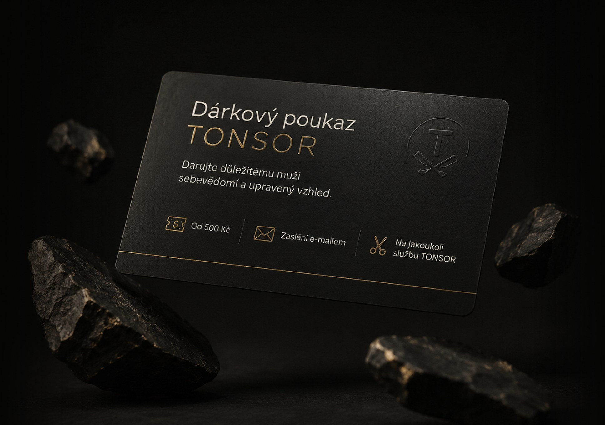
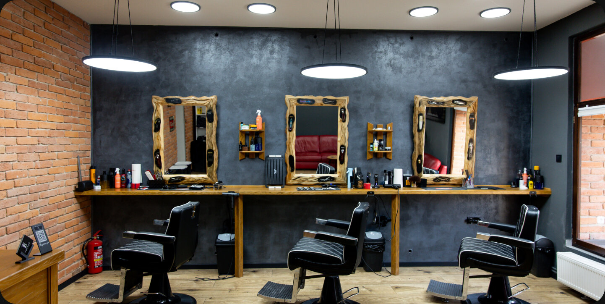
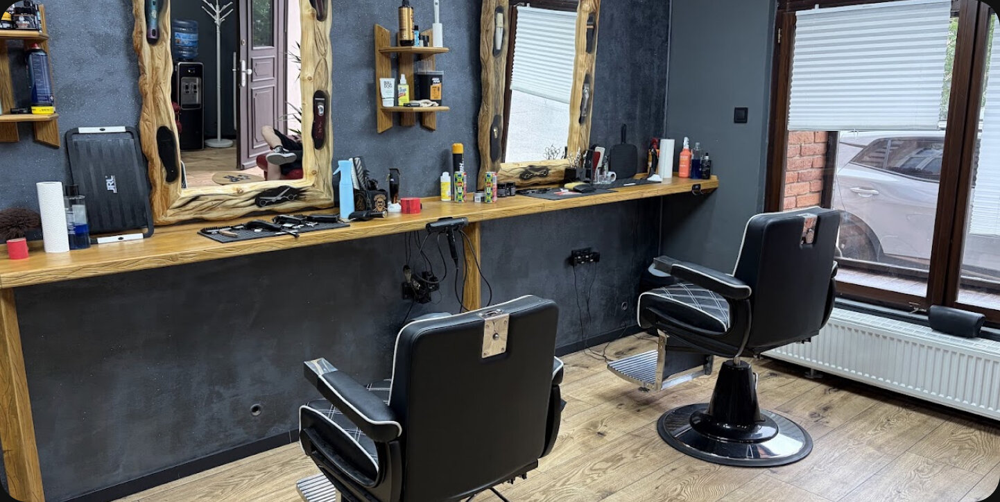
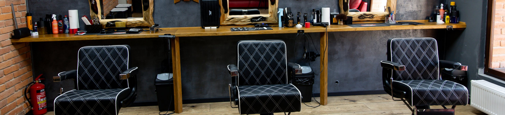

Střih krátkých vlasů
od 500 Kč
AKCE MĚSÍCE – PRVNÍ NÁVŠTĚVA SE SLEVOU 50%
od 500 Kč
od 600 Kč
od 750 Kč
od 300 Kč
od 400 Kč
od 300 Kč
od 1 100 Kč
1 400 Kč

Darujte důležitému muži sebevědomí a upravený vzhled. Od 500 Kč



Najděte inspiraci pro svůj střih na sociálních sítích TONSOR
Uděláme vám střih podle fotografie
Vše, co potřebujete vědět před návštěvou barbershopu TONSOR
Kolik stojí služby?
Ceny začínají od 300 Kč za úpravu nebo tónování vousů. Kompletní ceník všech služeb najdete na našem webu.
Mohu se před návštěvou poradit ohledně střihu?
Ano. Můžeme se spojit přes WhatsApp. Pošlete nám referenční fotku a svou fotografii a poradíme vám, zda je daný střih vhodný a jak by vám mohl sedět.
Máte volný termín dnes nebo zítra?
Snažíme se nechávat několik termínů pro rezervace na poslední chvíli. Aktuální dostupnost najdete v online rezervačním systému.
Jak dlouho služba trvá?
Standardní pánský střih trvá přibližně 45–60 minut. Kombinace střih + vousy trvá přibližně 75–90 minut.
Musím se objednat předem?
Doporučujeme rezervovat termín 2–3 dny před plánovanou návštěvou. Před svátky a vytíženými termíny raději alespoň týden dopředu.